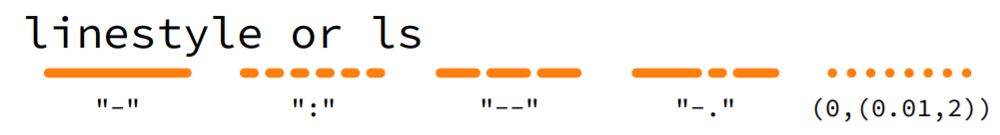
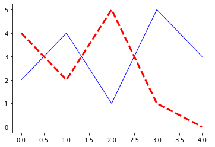
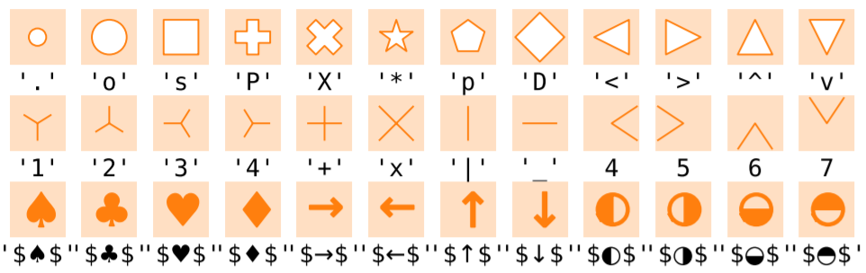

4.1.1. Grundlagen¶
4.1.1.1. Daten¶
4.1.1.3. Scatter/Linien Plot¶
Tipp: Das Komma nach dem letzten Befehl hat nur einen kosmetischen Grund, weil es die Ausgabe des letzten Befehls unterdrückt.
plt.plot(x,y);
4.1.1.3.1. Linien (Typ , Farbe , Dicke)¶
Hinweis zur Linienfarbe: Wenn die Linienfarbe selbstständig definiert wird, so wird für jeden neuen plot selbstständig eine neue Liniefarbe gewählt
ls - Linienstil

{kind=link}
c - Linienfarbe

lw - Liniendicke
default=1
Bilder aus: offizielle CheatSheets von Nicolas P. Rougier
plt.plot(x,y,ls="-",c="blue",lw=1);
plt.plot(x,y2,ls="--",c="red",lw=3);

4.1.1.3.2. Marker (Typ , Farbe , Dicke)¶
marker - Markerstil

{kind=link}
markevery - Anzahl

ms - Markergröße
Bilder aus: offizielle CheatSheets von Nicolas P. Rougier
plt.plot(x,y,marker="o",ms=10);
plt.plot(x,y2,marker="s",ms=15,markevery=[0,-1]);

4.1.1.5. Wertebereich der Achsen¶
4.1.1.6. Gitter¶
4.1.1.7. Bildgröße¶
4.1.1.9. Bild speichern¶
plt.savefig('Name.png', bbox_inches='tight', dpi=150)